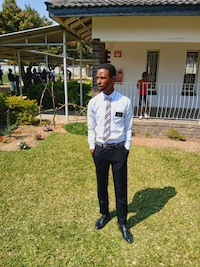

Abel Chiwandire | WDD 130
Hello! My name is Abel Chiwandire and I am from Johannesburg, South Africa. I am a web design and development student at BYU-Pathway Worldwide. I love programming beause it brings my ideas to life and I am a very imaginative person. I also enjoy studying the word of God and sharing it with others. Learning about the Saviour gives me a sense of purpose and direction in life. It gives me hope and helps me to be a better person. I also enjoy playing football and spending time with my family and friends. I am passionate about learning new things and I am always looking for ways to improve myself. I believe that education is the key to success. I am excited to be a part of this class and I look forward to learning more about web design and development. I hope to use my skills to create websites that will help people and make a difference in the world. I am also looking forward to meeting new people and making new friends in this class. I believe that we can learn a lot from each other and I am excited to share my knowledge and experiences with others. I hope to inspire others to pursue their dreams and to never give up on their goals.